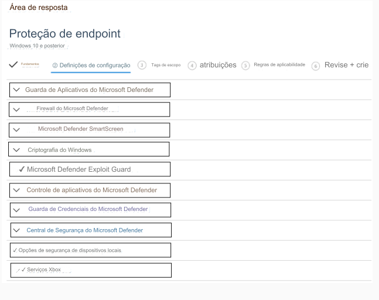

144- PONTO DE ACESSO
Você tem 200 computadores que executam o Windows 10.
Os computadores estão associados ao Azure AD e inscritos
no Microsoft Intune.
Você precisa configurar um perfil de configuração de dispositivo do Intune para atender aos seguintes requisitos:
• Impedir que aplicativos do Microsoft Office iniciem processos secundários.
• Impedir que os usuários transfiram arquivos por FTP.
Quais são as duas configurações que você deve definir no perfil de configuração do Endpoint Protection? Para responder,
selecione as configurações apropriadas na área de resposta.
NOTA: Cada seleção correta vale um ponto.
